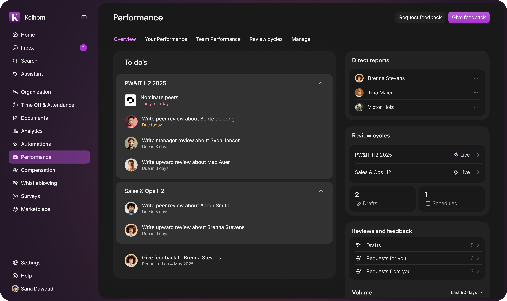
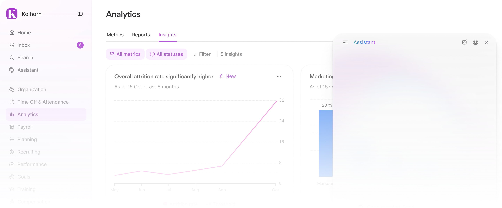
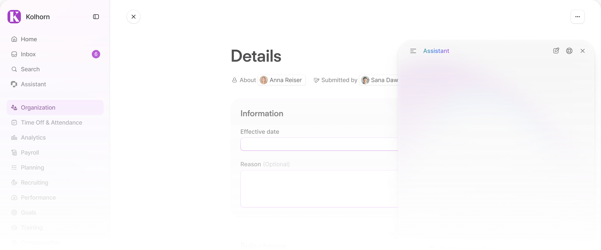
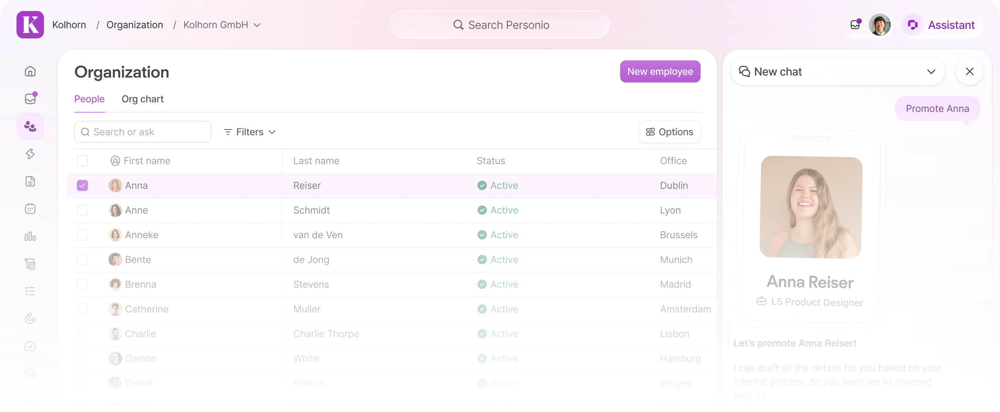
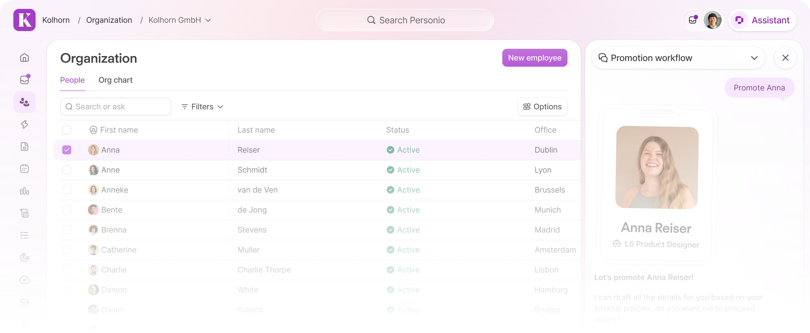
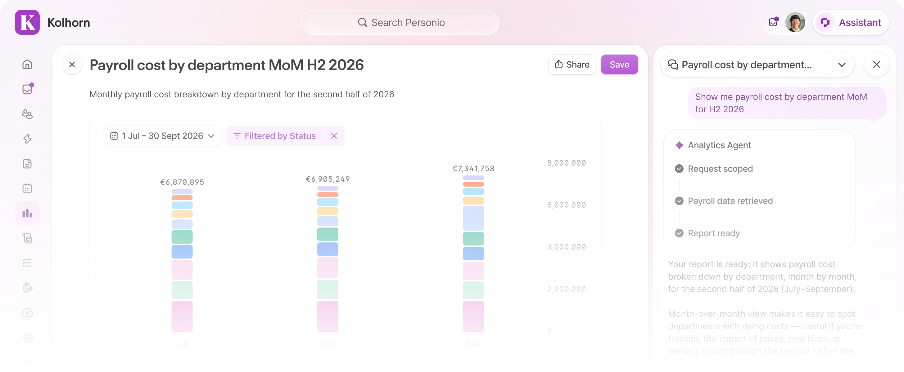
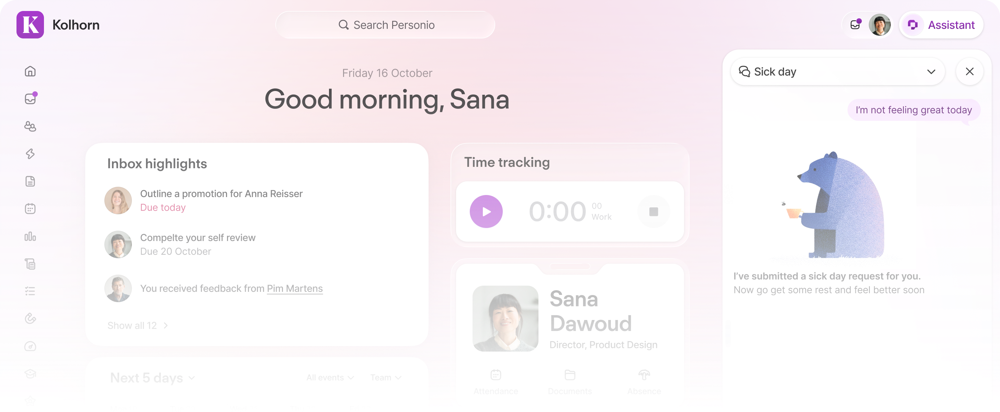
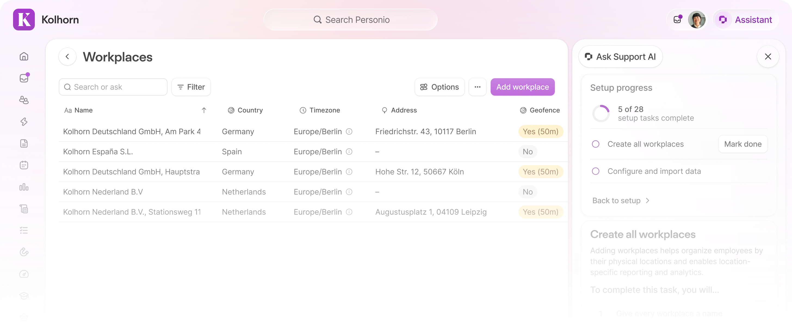
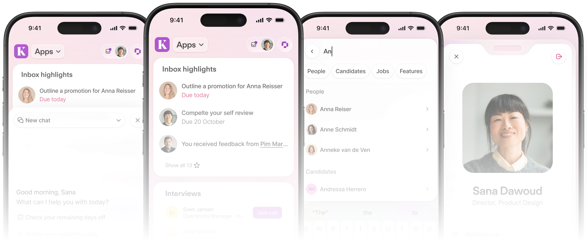

Systems and Product Designer
Currently working as a staff product designer at Personio from sunny Madrid, owning our design system and the product architecture.

Currently working as a staff product designer at Personio from sunny Madrid, owning our design system and the product architecture.
Personio’s Assistant and app frame evolved as one system: a persistent workspace for AI, navigation, and everyday actions.
The overlay separated assistance from the work it was meant to support. It covered page context and controls users needed to evaluate guidance and act on it, undermining the Assistant’s value. Its fixed interaction model also did not scale across workflows or screen sizes.

During Q2, we interviewed Personio’s Co-Creation Council about real workflows. They lost context during employee changes; in Analytics, conversations reset and report templates were hard to find.
The Assistant needed to stay anchored to the page and task.

Global search moves beyond Home into the header; the employee profile and inbox entry points gain prominence there too.
These persistent controls establish orientation while the Assistant stays available beside the active product page.

Overlay, page-level AI, and an embedded panel were compared. The overlay kept its interruptions; page-level AI could not carry a conversation across the product.
The embedded Assistant offered continuity, with the frame and page adapting around it.

Wide viewports use a resizable side panel beside the page. Narrow screens switch to full-screen; /assistant supports immersive work.
The same conversation is intended to persist between modes.

The thread persists across routes; the current URL can inform page-aware prompts.
Context payload, permissions, unsaved state, and fallbacks require technical and security validation. Persistent chat does not mean unrestricted page access.

The Assistant can host specialist widgets; focused tools such as summaries can stay within product pages.
Shared UI patterns provide consistency while product teams own domain data and agents.

Global search, employee profile, inbox, navigation, and AI share a persistent product frame across viewports and devices.

Personio is part of the everyday employee experience. Customization settings let each company make that experience feel like an extension of its own brand.
2025 · Brand expression, product experience, accessibility
Employees meet Personio through the rhythm of work: checking details, finding information, and completing everyday tasks. A familiar company identity makes that shared space feel closer to home.
Administrators can add their logo, choose an accent colour, and set the wallpaper from a selection of ready-made options or an image of their own.
Small choices build a consistent presence across the moments employees spend in Personio.
A customer’s colour cannot be treated as decoration for one screen. It needs to carry through controls, navigation, and content while keeping hierarchy clear in both light and dark appearances.
The theming system translates a chosen brand colour into a considered range of tones, so the interface can express the brand without losing clarity.
People need to recognize actions, read content, and distinguish information at a glance—even when the palette changes. Accessibility and usability are part of the customization logic, not cleanup after it.
The result is a product that can feel personal while keeping familiar patterns and legible states consistent across its surfaces.
Personio’s Performance suite served 1,400+ mid-market customers across Europe. The 2024 overhaul connected fragmented tools into a role-aware system for planning, running, and reviewing performance.
Performance overhaul · Product architecture and service design
2024 · Lead interaction design · Product architecture, service design, IA foundations, ICP definition, and visual design
Performance moves through planning, reviewing, rewarding, and monitoring. The architecture treats those activities as a recurring cycle instead of a linear checklist.
Individual contributors, managers, org leaders, and HR managers carry different responsibilities.
The information architecture scales with that responsibility, surfacing more of the system as each role’s scope expands.
Four disconnected features became one Performance area, with dedicated spaces for overview, personal and team performance, review cycles, and management.
HR managers configure the process; employees and leaders take part through role-appropriate views.
Seventeen moderated card-sorting sessions with non-customer HR managers across the UK, Germany, and wider Europe explored how performance activities are planned, sequenced, and connected.
The scope-based pattern was adopted across 10 product areas; a separate summary cites the information architecture’s reuse across seven products.
The FY2024–25 results summary reports 124% NRR in Mid-market, UKI & International and names Performance the #1 upsell product. The material does not attribute those outcomes solely to the redesign.